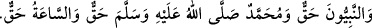

kabul edilir” buyurmuştur. İşte bu yakîn-i makbûliyet yâni kesin olarak kabul
edilebilme durumu, peşinden bu zikrin okunduğu namazlar üzerine terettüp eder.
Peygamberimiz (s.a.), Allah Teala’nın seher vaktinde kullarına olan yakınlığını şöyle
haber verir: “Her gecenin son üçte biri kalınca Rabbimiz (ilmi, iradesi ve rahmetiyle)
en yakın göğe inerek şöyle buyurur: «Yok mu benden bir şey isteyen, istediğini
vereyim? Yok mu benden mağfiret dileyen, onu bağışlayayım?»”
Rasûlullah (s.a.) teheccüd için gece kalktığında şöyle duâ ederdi:
“Allahım hamd sanadır. Sen gökleri ve yeri ayakta tutansın. Hamd sanadır. Sen
göklerin ve yerin nurusun. Hamd sanadır. Sen göklerin ve yerin ışığısın. Allahım!
Hamd sanadır. Senin; Zâtın, vaadin, likân/sana kavuşulmak, sözün gerçektir. Cennet,
cehennem, peygamber, Muhammed (s.a.) ve kıyâmet de haktır. Allahım! Sana teslim
oldum ve sana inandım. Sana tevekkül edip sana yöneldim. Hasmımı sana havale edip
seni hakem tanıdım. Geçmiş ve gelecekte, gizli ve açıkta yaptığım günahlarımı affet.
Evvel ve Âhir sensin. Senden başka ilah yoktur. Güç ve kuvvet ancak sana aiddir.”[12]
Dâvud (a.s) Cibril’e, “Ey Cibril! Gecenin en faziletli vakti hangisidir?” diye sorunca
Cibril (a.s) ona şöyle cevap vermiştir: “Benim bu hususta ancak şu kadar bilgim var.
Arş, seher vakti sallanır. Arşın sallanma sebepleri ise; gecesini uykusuzlukla geçiren
kimselerin telakki ve sûrûra garkolmaları nedeniyle tecelliyât-ı ilâhiyenin yoğun olarak
zuhûru, günahkâr olup da istiğfarda bulunanların inlemelerinden duyduğu coşku, bu
vakitte Allâh’ın af ve mağfiretinin bolluğu sebebiyle duâların kabûlü ve bir de Allah’ın
lütfuna muhtaç olduğu halde buna lüzûm görmeyip (O’nun lütfundan kaçan) kaçak bir
kölenin efendisinin nimetine olan imtinası gibi firârî olan kullarına karşı Allah’ın
şefkatinin büyüklüğüne olan hayretidir. İnsanlar uykularında gaflet hâlinde
bulunmalarına rağmen Yüce Allah onlara yönelir ve: «Benden isteyen yok mu vereyim?
Tevbekâr olup pişmanlık duyan yok mu affedeyim? Başa kakmaksızın bana borç veren
yok mu O’na karşılığını vereyim?» diye seslenir durur. Arşın (vecde gelip)